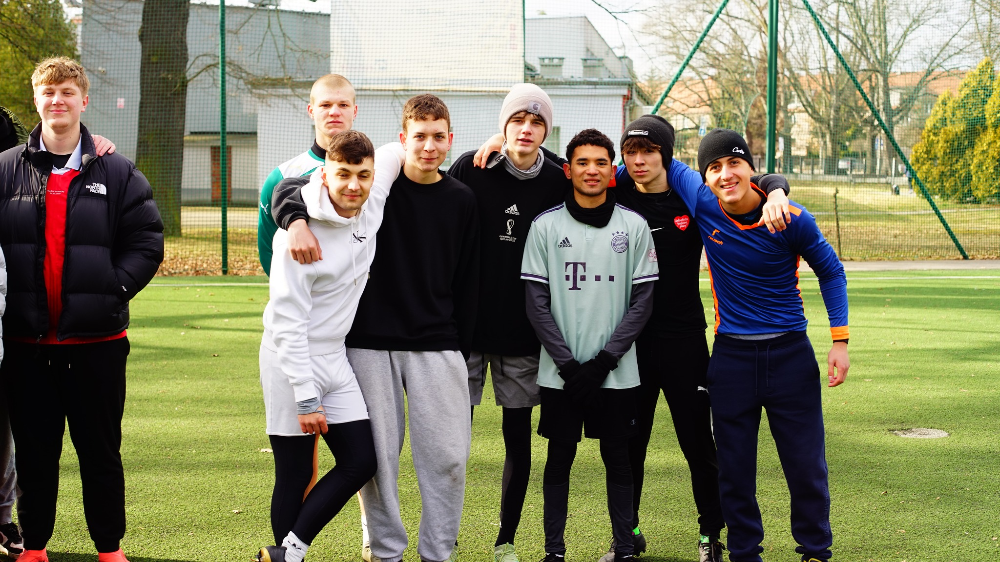
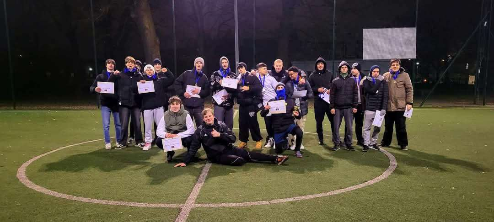

🔥 WroOpenCup – 2. edycja już 6 kwietnia! 🔥
Gotowi na wybuchową rywalizację? 6 kwietnia 2025 na Boisku Spartan Wrocław (ul. Krajewskiego 2) odbędzie się 2. edycja WroOpenCup – emocje, super nagrody i zabawa na najwyższym poziomie! ⚽🔥
🔴 Co Was czeka?
1️⃣ Zbiórka charytatywna! Podczas eventu odbędzie się zbiórka do puszki na rzecz schroniska – jeśli chcecie pomóc, wrzućcie datki! ❤️🐾
2️⃣ Nagrody, które Was zaskoczą! Przygotowaliśmy coś, czego się nie spodziewacie! 🏆
3️⃣ Faza pucharowa odbędzie się tylko na Spartanie! 🔥 To tam rozstrzygną się najważniejsze pojedynki o tytuł mistrza!
4️⃣ Faza grupowa? Boiska ogłosimy, jak poznamy liczbę drużyn, ale żadne nie będzie dalej niż 8 minut spacerem od Spartana! 🏃♂️
5️⃣ Nie masz drużyny? Nie problem! Zgłoś się indywidualnie, wypełnij krótką ankietę, a my dobierzemy Ci ekipę! 🤝⚽
6️⃣ Mecze klasycznie sędziowane przez licencjonowanego sędziego, a fazy grupowe będą prowadzone przez koordynatorów zawodów, którzy zadbają o płynność rywalizacji! ⚖️
7️⃣ Gramy w zespołach 9-osobowych (6 zawodników + 3 rezerwowych), więc zbierz ekipę i do boju! 💥
💥 Kiedy? 6 kwietnia 2025 – zapisz datę!
💥 Koszt? Tylko 20 zł/osoba!
💥 Jak się zapisać? Wyślij zgłoszenie na wroopencup@gmail.com! 💌
1. tura zapisów startuje już teraz i trwa do 21 marca! Zapisz się jak najszybciej! 🏃♂️
Czy zespół Nightmare obroni tytuł mistrza? Dowiemy się już wkrótce! 🔥⚽
Dołącz do nas na emocjonującą rywalizację, świetną zabawę i profesjonalną organizację! 🔥🔥🔥
W przypadku nie zebrania minimalnej liczby uczestników organizator zastrzega sobie prawo do zmiany miejsca zawodów.

WroOpenCup – Turniej dla Każdego!
WroOpenCup to niezwykły turniej piłkarski, w którym liczy się pasja, emocje i prawdziwa sportowa rywalizacja na najwyższym poziomie. To wydarzenie, które łączy wszystkich miłośników futbolu – niezależnie od wieku, umiejętności czy doświadczenia. U nas każdy zawodnik, niezależnie od tego, czy dopiero rozpoczyna swoją piłkarską przygodę, czy ma za sobą lata gry, może poczuć dreszczyk emocji, jaki towarzyszy finałom największych rozgrywek świata, takich jak Liga Mistrzów. WroOpenCup to nie tylko sport, ale również niezapomniana atmosfera, pełna pozytywnej energii, fair play i ducha zespołowej walki. To okazja do sprawdzenia swoich umiejętności, przeżycia niesamowitych chwil na boisku i stworzenia wspomnień, które zostaną z Tobą na zawsze. Niezależnie od wyniku, każdy uczestnik może liczyć na niesamowite emocje, zdrową rywalizację i świetną zabawę.
JAK SIĘ ZAPISAĆ?
Nie masz drużyny? Żaden problem! Wystarczy wypełnić krótką ankietę, a my znajdziemy dla Ciebie zespół i zadbamy o resztę. Ty przychodzisz, grasz i przeżywasz niezapomniane piłkarskie emocje. Zapisz swoją drużynę już teraz! Wyślij zgłoszenie na wroopencup@gmail.com i dołącz do gry!
Dołącz do nas i stań się częścią WroOpenCup – miejsca, gdzie liczy się gra, zabawa i sportowa adrenalina!
Ogromne dzięki dla wszystkich, którzy wzięli udział w 1. edycji turnieju WroOpenCup! To było naprawdę coś – emocje, rywalizacja i pasja na najwyższym poziomie! Gratulacje dla najlepszych drużyn!
🥇 Nightmare – zasłużony mistrz!
🥈 Team Mikro – świetna walka!
🥉 Emeryci – pokazali klasę!
